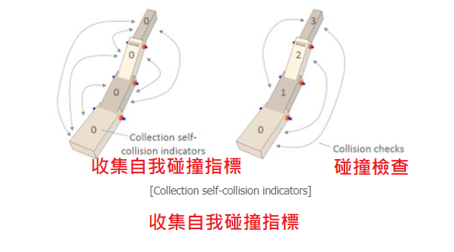
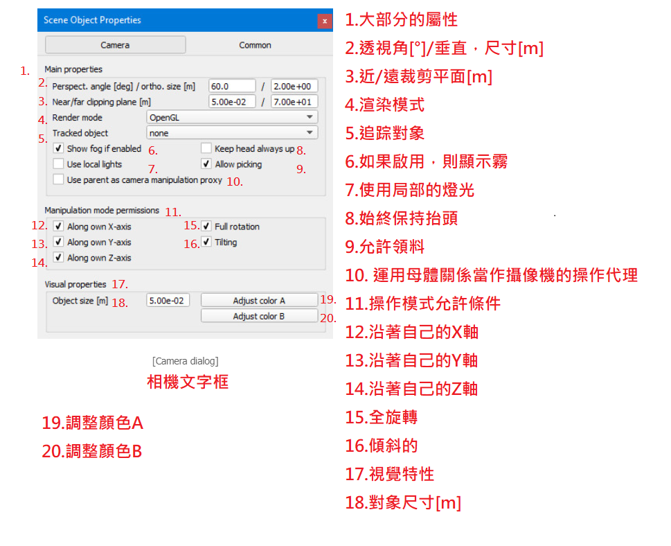
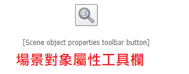

Environment(環境) <<
Previous Next >> Simulation(模擬)
Entities(實體)
An entity is a term that refers to a scene object or a collection. Following figure illustrates the relationship between scene objects, collections and entities:
實體是指場景對像或集合的術語。 下圖說明了場景對象，集合和實體之間的關係：
png.png)
Scene objects(場景對象)
The main elements in CoppeliaSim that are used for building a simulation scene are scene objects (objects in short). Objects are visible in the scene hierarchy and in the scene view. In the scene view, objects have a three dimensional representation as illustrated in following figure:
CoppeliaSim中用於構建模擬場景的主要元素是場景對象（簡稱對象）。 對像在場景階層結構和場景視圖中可見。 在場景視圖中，對象具有三維表示，如下圖所示：
.png)
Following list gives a brief functional description of each object type:
- Shapes: a shape is a rigid mesh that is composed of triangular faces.
- Joints: a joint object is a joint or actuator. Four types are supported: revolute joints, prismatic joints, screws and spherical joints.
- Graphs: a graph is used to record and visualize simulation data.
- Dummies: a dummy is a point with orientation. Dummies are multipurpose objects that can have many different applications.
- Proximity sensors: a proximity sensor detects objects in a geometrically exact fashion within its detection volume. CoppeliaSim supports pyramid-, cylinder-, disk-, cone- and ray-type proximity sensors.
- Vision sensors: a vision sensor is a camera-type sensor, reacting to light, colors and images.
- Force sensors: a force sensor is an object able to measure forces and torques that are applied to it. It also has the ability to break if a given threashold is overshot.
- Cameras: a camera is an object that allows seeing the simulation scene from various view points.
- Lights: a light is an object that allows illuminating the simulation scene.
- Paths: a path is an object that defines a path or trajectory in space. It can be used for various purposes, also as a customized joint or actuator.
- OC trees: an OC tree is a spacial partitioning data structure made up by voxels.
- Point clouds: a point cloud is an OC tree structure that contains points.
- 形狀：形狀是由三角形面組成的剛性網格。
- 軸節：軸節對像是關節或執行器。支持四種類型：旋轉接頭，棱柱接頭，螺釘和球形接頭。
- 圖形：圖形用於記錄和可視化模擬數據。
- 用來填充的無用物件：無用物件是具有定向的點。無用物件是可以具有許多不同應用程序的多用途對象。
- 鄰近傳感器：鄰近傳感器以幾何精確的方式在其檢測範圍內檢測物體。 CoppeliaSim支持金字塔型，圓柱型，圓盤型，圓錐型和射線型接近傳感器。
- 視覺傳感器：視覺傳感器是一種相機型傳感器，對光線，顏色和圖像有反應。
- 力傳感器：力傳感器是能夠測量施加到其上的力和扭矩的對象。如果給定的閾值被超出，它也具有打破的能力。
- 攝像機：攝像機是一個對象，可以從各個角度查看模擬場景。
- 燈光：燈光是一個可以照亮模擬場景的對象。
- 路徑：路徑是在空間中定義路徑或軌蹟的對象。它可以用於各種目的，也可以用作定制的接頭或執行器。
- 八元樹：八元樹是由體素組成的空間分區數據結構。
- 點雲：點雲是包含點的八元樹結構。
Some of above objects can have special properties allowing other objects or calculation modules to interact with them. Objects can be:
以上某些對象可以具有特殊的屬性，從而允許其他對像或計算模塊與它們進行交互。對象可以是：
- Collidable: collidable objects can be tested for collision against other collidable objects.
- Measurable: measurable objects can have the minimum distance between them and other measurable objects calculated.
- Detectable: detectable objects can be detected by proximity sensors.
- Renderable: renderable objects can be seen or detected by vision sensors.
- Viewable: viewable objects can be looked through, looked at, or their image content can be visualized in views. Refer to the pages and views-section for more information
- 可碰撞的：可以測試可碰撞的物體與其他可碰撞物體的碰撞。
- 可測量的：可測量的對象與所計算的其他可測量對象之間的距離最小。
- 可檢測的：可檢測的物體可以被接近傳感器檢測到。
- 可渲染：視覺傳感器可以看到或檢測可渲染對象。(渲染的意思:在我們假象的三维空間中，但是我們要在二维的顯示器中看到他，我們就稱之為把三角形從三维空間渲染到二维空間中 。)
- 可視對象：可以查看，查看可視對象，或者可以在視圖中可視化其圖像內容。請參閱頁面和視圖部分以獲取更多信息
Each object has a position and orientation within the simulation scene. We refer to an object's position and orientation as configuration of the object. Objects can be attached to other objects (or built on top of each other). If object A is built on top of object B, then object B is the parent and object A is the child. To create a parent-child relationships between object B and object A, select object A, then select object B (the selection order is important). Then select [Menu bar --> Edit --> Make last selected object parent]. Following figure illustrates this operation:
每個對像在模擬場景中都有一個位置和方向。 我們將對象的位置和方向稱為對象的配置。 可以將對象附加到其他對象（或建立在彼此之上）。 如果對象A建立在對象B的頂部，則對象B是父對象，而對象A是子對象。 要在對象B和對象A之間創建父子關係，請選擇對象A，然後選擇對象B（選擇順序很重要）。 然後選擇[菜單欄->編輯->將最後選擇的對象設為父對象]。 下圖說明了此操作：
Alternatively, you can drag and drop an object onto another one in the scene hierarchy to obtain a similar result. Notice that object A's configuration was not changed (both objects kept their respective configuration). However, looking at the scene hierarchy, you can see that object A became child of object B. If you now move object B, object A will automatically follow, since object A is attached to object B. Object A can be detached by selecting it, then selecting [Menu bar --> Edit --> Make selected object(s) orphan]. Doing so will detach object A without changing its configuration. Alternatively, you can drag and drop an object onto the world icon to obtain a similar result.
或者，您可以將一個對象拖放到場景階層結構中的另一個對像上，以獲得相似的結果。(將對象A加入為對象B的子對象)。請注意，對象A的配置未更改（兩個對像都保留了各自的配置）。但是，查看場景階層結構，您可以看到對象A成為對象B的子對象。如果現在移動對象B，則對象A將自動跟隨，因為對象A已附加到對象B。可以通過選擇對象A來分離對象A。 然後選擇[菜單欄->編輯->使所選對象成為孤立對象]。這樣做將分離對象A而不會更改其配置。或者，您可以將一個對象拖放到上層圖標上以獲得類似的結果。
(1) Scene object properties(場景對象屬性)
The scene object properties dialog is located at [Menu bar --> Tools --> Scene object properties]. You can also open the dialog with a double-click on an object icon in the scene hierarchy, or with a click on its toolbar button:
場景對象屬性對話框位於[菜單欄->工具->場景對象屬性]。 您也可以通過雙擊場景階層結構中的對像圖標或單擊其工具欄按鈕來打開對話框：
The scene object properties dialog displays properties related to objects (i.e. scene objects). The dialog is context sensitive and its content will mainly depend on the scene object selection state: only the properties of the last selected object will be displayed. Those properties are divided into 2 parts:
場景對象屬性對話框顯示與對象（即場景對象）相關的屬性。 該對話框是上下文相關的，其內容將主要取決於場景對象的選擇狀態：僅顯示最後選擇的對象的屬性。 這些屬性分為兩部分：
- Object-type specific properties: properties specific to the selected object type. See further below for details.
- Object common properties: properties common to all object types.
- 特定於對像類型的屬性：特定於所選對像類型的屬性。 詳情請參見下文。
- 對象通用屬性：所有對像類型通用的屬性。
2 buttons in the upper part of the dialog allow selecting the desired type of properties to display. If the object selection is empty, then all dialog items will be inactive.
對話框上部的2個按鈕允許選擇要顯示的所需屬性類型。 如果對象選擇為空，則所有對話框項都將處於非活動狀態。
Object common properties(場景對象通用屬性)
The object common properties dialog is part of the scene object properties dialog, which is located at [Menu bar --> Tools --> Scene object properties]. You can also open the dialog with a double-click on an object icon in the scene hierarchy, or with a click on its toolbar button:
對象公共屬性對話框是場景對象屬性對話框的一部分，位於[菜單欄->工具->場景對象屬性]。 您也可以通過雙擊場景階層結構中的對像圖標或單擊其工具欄按鈕來打開對話框：
n the scene object properties dialog, click the Common button to display the object common properties dialog. The dialog displays the settings and parameters of the last selected object. If no object is selected, the dialog is inactive. If more than one object is selected, then some parameters can be copied from the last selected object to the other selected objects (Apply to selection-buttons):
在場景對象屬性對話框中，單擊“通用”按鈕以顯示對象通用屬性對話框。 該對話框顯示最後選擇的對象的設置和參數。 如果未選擇任何對象，則該對話框處於非活動狀態。 如果選擇了多個對象，則可以將某些參數從上一個選定對象複製到其他選定對象（適用於選擇按鈕）：
可選：指示是否可以在場景中選擇對象。始終可以在場景階層中選擇對象。另請參閱sim.setObjectProperty函數。
- Invisible during selection: when enabled, then the object will be invisible for the selection process (i.e. you will be able to select through the object).
選擇期間不可見：啟用該選項後，對象將在選擇過程中不可見（即，您將可以通過對象進行其他對象選擇）。
- Ignored by depth pass: when enabled, then the object will be ignored during the depth rendering pass. The depth rendering pass is used to correctly position the red sphere for camera movements.
被深度傳遞忽略：啟用時，在深度渲染傳遞過程中將忽略該對象。深度渲染傳遞用於正確定位紅色球體以進行相機移動。
- Select base of model instead: if enabled, then selecting the object in the scene will select its first parented object marked as object is model base instead (see further down). This property is convenient when protecting a model from faulty manipulations, allowing it to be manipulated as a single entity together with other objects. Refer to the section on models and also to the sim.setObjectProperty function.
替代選擇模型基礎：如果啟用，則在場景中選擇對象將選擇其第一個父對象，標記為“對像是模型基礎”（請參見下一節）。當保護模型免受錯誤操縱時，此屬性很方便，允許將其與其他對像一起作為單個實體進行操縱。請參考有關模型的部分以及sim.setObjectProperty函數。
- Ignored by model bounding box: when selected, and the object is part of a model, then the model bounding box (i.e. model selection bounding box) will not encompass that object. This is useful for invisible objects that might make the model bounding box appear too big. This property has no functional effect. Refer also to the sim.setObjectProperty function.
被模型邊界框忽略：選中該對象並且該對像是模型的一部分時，模型邊界框（即模型選擇邊界框）將不包含該對象。這對於可能會使模型邊界框顯得太大的不可見對像很有用。此屬性沒有功能作用。另請參閱sim.setObjectProperty函數。
忽略視圖擬合：在未選擇任何對象的情況下將場景擬合到視圖時，將不考慮選擇此項目的對象。通常地板和類似物會被這樣標記。另請參閱適合視圖的工具欄按鈕和sim.cameraFitToView api函數。
- Cannot be deleted during simul.: when enabled, then the object will ignore a deletion operation when a simulation is running (deletion will however still work when triggered via code).
無法在模擬過程中刪除：啟用後，對象將在模擬運行時忽略刪除操作（但是，通過代碼觸發後，刪除仍然可以進行）。
- Cannot be deleted: when enabled, then the object will ignore a deletion operation (deletion will however still work when triggered via code).
無法刪除：啟用後，該對象將忽略刪除操作（但是，通過代碼觸發後，刪除仍將起作用）。
- Extension string: a string that describes additional object properties, mainly used by extension plugins (see also the sim.getExtensionString API function).
擴展字符串：描述附加對象屬性的字符串，主要由擴展插件使用（另請參見sim.getExtensionString API函數）。
- Camera visibility layers: each object in CoppeliaSim can be assigned to one or several visibility layers. If there is at least one visibility layer that matches the layer selection dialog layers, then the object will be visible when seen from a camera. By default, a shape is assigned to the first layer, a joint to the second layer, a dummy to the third layer, etc.
攝像機可見性層：可以將CoppeliaSim中的每個對象分配給一個或多個可見性層。如果至少有一個與圖層選擇對話框圖層匹配的可見性圖層，則從攝像機看時該對象將可見。默認情況下，將形狀分配給第一層，將關節分配給第二層，將虛擬對象分配給第三層，等等。
- Can be seen by: allows to specify a camera or vision sensor (or a collection containing cameras or vision sensors) that will be the only one able to see the object.
可以通過以下方式看到：允許指定將是唯一能夠看到對象的攝像機或視覺傳感器（或包含攝像機或視覺傳感器的集合）。
可碰撞：允許為選定的可碰撞對象啟用或禁用碰撞檢測功能。
可測量的：允許啟用或禁用所選可測量對象的最小距離計算功能。
- Detectable: allows enabling or disabling proximity sensor detection capability for the selected detectable object. Clicking details allows you to edit the detectable details.
可檢測：允許為選定的可檢測對象啟用或禁用接近傳感器檢測功能。單擊詳細信息可讓您編輯可檢測的詳細信息。
可渲染：允許為選定的可渲染對象啟用或禁用視覺傳感器檢測功能。
- Object is model base: indicates whether the object should act as the base of a model. An object flagged as base of model has special properties (e.g. saving or copying the object will also automatically save/copy all its children and children's children, etc.). Additionally, when such an object is selected, the selection bounding box is displayed as thick stippled lines, encompassing the whole model. Refer to models, and to the select base of model instead item above.
對像是模型的基礎：指示對像是否應充當模型的基礎。標記為模型基礎的對象具有特殊屬性（例如，保存或複制該對像還將自動保存/複製其所有子對像以及子對象的子對象等）。另外，當選擇了此類對象時，選擇邊界框將顯示為點狀的粗線，包圍整個模型。請參考模型，並參考上面的模型選擇模型。
編輯模型屬性：允許打開模型對話框。
- Object / model can transfer or accept DNA: when this feature is enabled for an object or a model, then it will share a same identifier with all of its copies. An Object or model can then transfer its DNA (i.e. copy an instance of itself) to all of its siblings (i.e. objects/models with the same identifier), via the transfer DNA toolbar button. Imagine having 100 same robots in your scene that you want to modify in a similar way: simply modify one of them, select it, then click the transfer DNA toolbar button. This item should almost always be checked for a model base (see further up), to facilitate model re-instanciation.
對象/模型可以轉移或接受DNA：當為對像或模型啟用此功能時，它將與所有副本共享相同的標識符。然後，對像或模型可以通過轉移DNA工具欄按鈕將其DNA（即復制其自身的實例）轉移到其所有同級兄弟（即具有相同標識符的對象/模型）。想像一下，您要以類似的方式修改場景中的100個相同的機器人：只需修改其中一個，選擇它，然後單擊Transfer DNA工具欄按鈕。幾乎應始終檢查該項目的模型基礎（請參閱後續部分），以促進模型的重新實例化。
- Collection self-collision indicator: when performing collision (or minimum distance) calculations between two identical collections, CoppeliaSim will normally check all collection items against all other items in that collection. In some situation, such as a kinematic chain, one doesn't want to check consecutive links, since they might be constantly colliding at the interface. In that case, you can use the collection self-collision indicator: two items of a same collection will not be checked against each other if their indicator difference is exactly 1, as can be seen on following figure:
集合自我碰撞指示器：在兩個相同的集合之間執行碰撞（或最小距離）計算時，CoppeliaSim通常會對照該集合中的所有其他項目檢查所有集合項目。 在某些情況下，例如運動鏈，一個人不想檢查連續的鏈接，因為它們可能在接口處不斷碰撞。 在這種情況下，您可以使用集合自衝突指標：如果同一集合的兩個項目的指標差恰好為1，則不會相互檢查它們，如下圖所示：

- Scaling: objects or models can be scaled in a flexible way in CoppeliaSim. The size of an object or model, and all related properties are scaled appropriately (e.g. joint ranges, velocity settings, masses, etc.) so that the scaled object or model can normally continue to operate (but at a different scale).
縮放：可以在CoppeliaSim中靈活地縮放對像或模型。 適當縮放對像或模型的大小以及所有相關屬性（例如關節範圍，速度設置，質量等），以便縮放後的對像或模型可以正常繼續運行（但以不同的比例）。
- Assembling: opens a dialog that allows to specify how the assembling toolbar button will handle the object during assembly (if objects are assembled in a different way than via the assembling toolbar button, then following settings will have no influence):
組裝：打開一個對話框，該對話框可指定組裝期間工具欄按鈕如何處理對象（如果對象的組裝方式與通過工具欄按鈕的組裝方式不同，則以下設置將沒有影響）：
- Required match values for parent: the object can be attached to another object (i.e. become another object's child), but only if one of the listed required match values for parent matches one of its new parent's required match values for child values. This feature is useful in order to set a fixture compatibility criteria (e.g. gripper A can only be attached with a robot that has a tooltip of type A).
母體的必需匹配值：可以將對象附加到另一個對象（即成為另一個對象的子對象），但前提是列出的母體必需匹配值之一與其新母體的子項必需匹配值之一匹配。此功能對於設置夾具兼容性標準很有用（例如，夾具A只能與工具提示類型為A的機器人連接）。
- Required match values for child: the object can have another object attached to itself (i.e. become another object's parent), but only if one of its required match values for child matches one of its new child's required match values for parent values. This feature is useful in order to set a fixture compatibility criteria (e.g. gripper A can only be attached with a robot that has a tooltip of type A).
子項的必需匹配值：該對象可以附加另一個對象（即成為另一個對象的母體），但前提是其子項的必需匹配值之一與其新子項的主值必需匹配值之一匹配。此功能對於設置夾具兼容性標準很有用（例如，夾具A只能與工具提示類型為A的機器人連接）。(上述功能的相反操作)
- When assembling, a specific local transform. matrix will be applied: if checked, then the object won't stay in place when assembled: a specific transformation matrix will be used as its new local transformation matrix. By default that matrix is the identity matrix, but you can specify a specific matrix by clicking Set matrix. This feature is useful in order to automatically position and orient an object correctly in relation to its new parent (e.g. in order to have a gripper automatically placed correctly at a robot's tooltip)
組裝時，進行特定的局部轉換。矩陣將被應用：如果選中，則對像在組裝時不會停留在原位：特定的變換矩陣將用作其新的局部變換矩陣。默認情況下，該矩陣是單位矩陣，但是您可以通過單擊設置矩陣來指定特定矩陣。此功能對於自動相對於其新主對象正確定位和定向對像很有用（例如，為了使抓取器自動正確放置在機器人的工具提示上）
The object selection order is important for assembly operations, i.e. first select the to-become-child-object, then the to-become-parent-object. If the selection order is wrong, or if the to-become-parent-object is not appropriate, then CoppeliaSim will try to guess what the real intention of the user was (e.g. by searching for an appropriate match in the to-become-parent-object's descendents), if there is no ambiguity.
對象選擇順序對於組裝操作很重要，即首先選擇要成為子對象的對象，然後選擇要成為母體的對象。 如果選擇順序有誤，或者如果成為母體的對像不合適，那麼CoppeliaSim將嘗試猜測用戶的真實意圖（例如，藉著尋找合適的匹配項在，成為母體對象的子對象的這件事上），如果沒有模糊的話。
Cameras(攝影機)
Cameras are viewable objects, which means that you can look through them and display a view of what they are looking at. You can have as many cameras as needed in your scene, each one of them offering a different view of the scene. Following shows an example of a scene containing several cameras:
相機是可見的對象，這意味著您可以瀏覽它們並顯示其所觀看內容的視圖。 您可以根據需要在場景中擁有任意數量的攝像機，每個攝像機都提供不同的場景視圖。 以下是一個包含多個攝像機的場景示例：
Make sure not to mix-up cameras with vision sensors. Following are the main differences:
確保不要將攝像機與視覺傳感器混淆。 以下是主要區別：
- A camera has no specific resolution (i.e. it adjusts automatically to the view size). A vision sensor has a fixed resolution.
- A camera's image content is not directly available via the API (but via a callback mechanism), and image processing not directly supported. A vision sensor's image content can be accessed via the API, and processed via the vision callback functions.
- A camera generally requires less CPU time and operates faster than vision sensors.
- A camera can display all object types. A vision sensor can only display renderable objects.
- 相機沒有特定的分辨率（即，它會自動調整為視圖尺寸）。 視覺傳感器具有固定的分辨率。
- 相機的圖像內容不能通過API直接獲得（而是通過回調機制獲得），並且不直接支持圖像處理。 視覺傳感器的圖像內容可以通過API進行訪問，並通過視覺回調函數進行處理。
- 攝像機通常比視覺傳感器需要更少的CPU時間並且運行得更快。
- 攝像機可以顯示所有對像類型。 視覺傳感器只能顯示可渲染的對象。
A camera can be added to the scene with [Menu bar --> Add --> Camera]. However adding a camera in this way will add the object in a default position and orientation. It is a better practice to add cameras by right-clicking on a specific view of a scene and selecting [Popup menu --> Add --> Camera]. This will add the object just in front of the current view. The added camera is automatically selected and you can then look through it with [Popup menu --> View --> Associate view with selected camera]. For this to work you will have to make sure the popup menu is activated on a view. When a view is created but not yet associated with a viewable object, the [Popup menu --> Add --> Camera] command will add a camera and directly associate it with the view (i.e. look through it). A camera can be associated with any number of views.
可以使用[菜單欄->添加->攝像機]將攝像機添加到場景中。 但是，以這種方式添加相機會將對象添加到默認位置和方向。 最好通過右鍵單擊場景的特定視圖並選擇[彈出菜單->添加->攝像機]來添加攝像機。 這會將對象添加到當前視圖的前面。 添加的攝像機會自動選擇，然後您可以使用[彈出菜單->視圖->將視圖與所選攝像機關聯]進行瀏覽。 為此，您必須確保在視圖上激活了彈出菜單。 創建視圖但尚未與可見對象關聯時，[彈出菜單->添加->攝像機]命令將添加攝像機並將其直接與視圖關聯（即瀏覽）。 攝像機可以與任意數量的視圖關聯。
Alternatively you can also associate a view with a camera by activating following popup in a view: [Popup menu --> View --> View selector..]. This will allow you to select the desired camera view from a preview window. When a camera is associated with a view, it can be manipulated with the mouse with following toolbar buttons:
或者，您還可以通過激活視圖中的以下彈出窗口來將視圖與攝像機關聯：[彈出菜單->視圖->視圖選擇器..]。 這將允許您從預覽窗口中選擇所需的攝像機視圖。 將相機與視圖關聯時，可以使用以下工具欄按鈕用鼠標對其進行操作：
- Camera angle button: allows adjusting the perspective projection angle of a camera view (when in perspective projection mode), or allows adjusting the view size of a camera view (when in orthogonal projection mode).
- Fit-to-view button: adjusts the camera of the view that has the focus in order to nicely frame all selected objects, or the entire scene if no object is selected.
- 攝像機角度按鈕：允許調整攝像機視圖的透視投影角度（在透視投影模式下），或者允許調整攝像機視圖的視圖尺寸（在正交投影模式下）。
- 適合視圖的按鈕：調整具有焦點的視圖的攝像機，以很好地構圖所有選定的對象，或者如果沒有選擇任何對象，則對整個場景進行構圖。
When the camera shift button is activated, it is very easy to navigate in the scene to any desired position and orientation using: (1) the left mouse button for shifting perpendicular to the view direction, (2) the mouse wheel for shifting along the view direction, and (3) the right mouse button for rotating about the clicked point:
激活相機移位按鈕後，使用以下方法很容易在場景中導航到任何所需的位置和方向：（1）鼠標左鍵用於垂直於視圖方向的移動；（2）鼠標滾輪用於沿視圖的移動 查看方向，以及（3）鼠標右鍵圍繞點擊點旋轉：
Cameras can automatically track objects (i.e. follow them as they move) by selecting the object to track, then selecting in the appropriate view [Popup menu --> View --> Track selected object]. A tracking camera will keep its position, but automatically adjust its viewing direction in order to always keep the object to track in its view field. This is different from having a camera attached to that object through a parent-child relationship.
相機可以通過選擇要跟踪的對象，然後在適當的視圖中選擇[彈出菜單->視圖->跟踪所選對象]，自動跟踪對象（即，跟隨它們移動）。 跟踪攝像機將保持其位置，但會自動調整其查看方向，以始終使對像在其視野中進行跟踪。 這與通過父子關係將攝像機連接到該對像不同。
Camera properties(攝影機屬性)
The camera properties are part of the scene object properties dialog, which is located at [Menu bar --> Tools --> Scene object properties]. You can also open the dialog with a double-click on an object icon in the scene hierarchy, or with a click on its toolbar button:
攝像機屬性是場景對象屬性對話框的一部分，該對話框位於[菜單欄->工具->場景對象屬性]。 您也可以通過雙擊場景層次結構中的對像圖標或單擊其工具欄按鈕來打開對話框：
In the scene object properties dialog, click the Camera button to display the camera dialog (the Camera button only appears if the last selection is a camera). The dialog displays the settings and parameters of the last selected camera. If more than one camera is selected, then some parameters can be copied from the last selected camera to the other selected cameras (Apply to selection-buttons):
在場景對象屬性對話框中，單擊“攝影機”按鈕以顯示攝影機對話框（“攝影機”按鈕僅在最後選擇的是攝影機時出現）。 該對話框顯示最後選擇的攝像機的設置和參數。 如果選擇了多個攝像機，則可以將某些參數從最後選擇的攝像機複製到其他選定的攝像機（適用於選擇按鈕）：

- Perspective angle: the perspective projection angle (or opening angle) of a camera. The effect of this parameter can only be seen if the associated view is in perspective projection mode.
透視角：攝像機的透視投影角（或打開角度）。僅當關聯的視圖處於透視投影模式時，才能看到此參數的效果。
- Orthographic size: the orthographic projection size (or view size) of a camera. The effect of this parameter can only be seen if the associated view is in orthographic projection mode.
正射影像尺寸：相機的正射投影尺寸（或視圖尺寸）。僅當關聯視圖處於正交投影模式時，才能看到此參數的效果。
- Near / far clipping plane: distance from the camera origin point from which the camera starts / stops seeing. If close / far objects should not be displayed, increase / reduce this value. These parameters are directly linked with the rendering precision, especially when an associated view is in perspective projection mode, then you should always be careful not to have a too big gap between the far and near clipping planes, otherwise you might experience some visual artifacts known as z-fighting (when surfaces or pixels farther away appear to overlap surfaces/pixels closer to the camera).
遠/近剪切平面：距攝像機開始/停止觀察的攝像機原點的距離。如果不應顯示近/遠對象，請增大/減小此值。這些參數與渲染精度直接相關，尤其是當關聯的視圖處於透視投影模式時，那麼應始終注意，遠裁剪面和近裁剪面之間的距離不要太大，否則可能會遇到一些已知的視覺偽像z爭鬥（當較遠的表面或像素看起來與更靠近相機的表面/像素重疊時）。
- Render mode: the render mode of the camera.
渲染模式：攝像機的渲染模式。
- Tracked object: object to be tracked by the camera. Tracking an object will not influence the camera's position, only its orientation will be automatically adjusted in order to follow the tracked object.
跟踪對象：攝像機跟踪的對象。跟踪對像不會影響相機的位置，僅會自動調整其方向以跟隨跟踪的對象。
- Show fog if enabled: if disabled, then this camera won't see any fog if fog is enabled. Also refer to the environment dialog.
如果啟用，則顯示霧：如果禁用，則啟用霧後，本相機將看不到任何霧。另請參閱環境對話框。
- Keep head always up: if enabled, the camera will always try to keep its head up, i.e. keep the camera's y-axis in a vertical plane.
始終保持頭部抬起：啟用該選項後，相機將始終保持抬頭，即，將相機的y軸保持在垂直平面上。
- Use local lights: if enabled, then only local lights parented with this camera (i.e. built on top of this camera) will be activated when displaying this camera's image content. Lights can be made local in the light properties.
使用局部照明：如果啟用，則在顯示此照相機的圖像內容時，只會激活與此照相機為主（即內置在此照相機頂部）的局部照明。可以在光源屬性中使光源局部化。
- Allow picking: allows you to enable/disable object picking (i.e. click to select an object)
允許拾取：允許您啟用/禁用對象拾取（即單擊以選擇一個對象）
- Use parent as camera manipulation proxy: if enabled, then the camera manipulation toolbar buttons will not affect the camera's position directly, but instead will affect the camera's parent object. This option is useful if you wish to have several cameras linked to each other (e.g. the default scene in CoppeliaSim has 3 cameras arranged orthogonally to each other. If one is moved, the two others will follow)
運用母體關係當作攝像機的操作代理：如果啟用，則攝像機操作工具欄按鈕將不會直接影響攝像機的位置，而是會間接影響攝像機的母體關係對象。如果您希望將多個攝像機彼此鏈接（例如，CoppeliaSim中的默認場景具有3個彼此正交排列的攝像機，則此選項很有用。如果移動一個攝像機，則另外兩個攝像機將跟隨）
- Along own X- / Y- / Z-axis: allows specifying which camera translation movements are allowed.
沿自己的X / Y / Z軸：允許指定允許攝像機的平移運動。
- Full rotation: if selected, then the camera is not limited in angular movements.
全旋轉：如果選擇此項，則攝像機不受角度運動的限制。
- Tilting: if selected, then the camera can be tilted with the corresponding toolbar button.
傾斜：如果選中，則可以使用相應的工具欄按鈕傾斜相機。
- Object size: size of the camera. This parameter has only a visual effect and no functional meaning.
對象尺寸：相機的尺寸。該參數僅具有視覺效果，沒有功能意義。
- Adjust color A / B: allows adjusting a camera's casing colors.
調整顏色A / B：可以調整相機的外殼顏色。
Shapes(形狀)
Shapes are rigid mesh objects that are composed of triangular faces. They can be imported, exported and edited. They come in four different sub-types:
形狀是由三角形面組成的剛性網格物體。 可以導入，導出和編輯。 它們分為四種不同的子類型：
 Simple random shape: can represent any mesh. It has one color and one set of visual attributes. Not optimised nor recommended for dynamics collision response calculation (since very slow and unstable).
Simple random shape: can represent any mesh. It has one color and one set of visual attributes. Not optimised nor recommended for dynamics collision response calculation (since very slow and unstable).
簡單的隨機形狀：可以代表任何網格。 它具有一種顏色和一組視覺屬性。 未優化，也不建議用於動態碰撞響應計算（因為非常緩慢且不穩定）。
 Compound random shape: can represent any mesh. It has several colors and sets of visual attributes. Not optimised nor recommended for dynamics collision response calculation (since very slow and unstable).
Compound random shape: can represent any mesh. It has several colors and sets of visual attributes. Not optimised nor recommended for dynamics collision response calculation (since very slow and unstable).
複合隨機形狀：可以代表任何網格。 它具有幾種顏色和一組視覺屬性。 未優化，也不建議用於動態碰撞響應計算（因為非常緩慢且不穩定）。
 Simple convex shape: represents a convex mesh with one color and one set of visual attributes. Optimized for dynamics collision response calculation (but pure shapes are recommended).
Simple convex shape: represents a convex mesh with one color and one set of visual attributes. Optimized for dynamics collision response calculation (but pure shapes are recommended).
簡單凸形：表示具有一種顏色和一組視覺屬性的凸網格。 針對動力學碰撞響應計算進行了優化（但建議使用純形狀）。
 Compound convex shape: represents a group of convex meshes with several colors and sets of visual attributes. Optimized for dynamics collision response calculation (but pure compound shapes are recommended).
Compound convex shape: represents a group of convex meshes with several colors and sets of visual attributes. Optimized for dynamics collision response calculation (but pure compound shapes are recommended).
複合凸形狀：表示一組具有多種顏色和一組視覺屬性的凸網格。 針對動力學碰撞響應計算進行了優化（但建議使用純複合形狀）。
 Pure simple shape: represents a primitive shape (cuboid, cylinder or sphere (with additional variations depending on the used physics engine). A pure simple shape (or pure compound shape) is best suited for dynamics collision response calculation, since it will perform very fast and is stable. See the dynamics module section for more information.
Pure simple shape: represents a primitive shape (cuboid, cylinder or sphere (with additional variations depending on the used physics engine). A pure simple shape (or pure compound shape) is best suited for dynamics collision response calculation, since it will perform very fast and is stable. See the dynamics module section for more information.
純簡單形狀：表示原始形狀（長方體，圓柱體或球體（根據所使用的物理引擎的不同，可能會有其他變化）。純簡單形狀（或純複合形狀）最適合於動力學碰撞響應計算，因為它的執行性能非常好 快速且穩定，請參閱動力學模塊部分以獲取更多信息。
 Pure compound shape: represents a group of primitive shapes (cuboid, cylinder or sphere). A pure compound shape (or pure simple shape) is best suited for dynamics collision response calculation, since it will perform very fast and is stable. See the dynamics module section for more information.
Pure compound shape: represents a group of primitive shapes (cuboid, cylinder or sphere). A pure compound shape (or pure simple shape) is best suited for dynamics collision response calculation, since it will perform very fast and is stable. See the dynamics module section for more information.
純複合形狀：代表一組原始形狀（長方體，圓柱體或球體）。 純複合形狀（或純簡單形狀）最適合動力學碰撞響應計算，因為它執行起來非常快且穩定。 有關更多信息，請參見動力學模塊部分。
 Heightfield shape: can represent a terrain as a regular grid, where only the heights change. Heightfields can also be considered as pure simple shapes, and are optimized for dynamics collision response calculation.
Heightfield shape: can represent a terrain as a regular grid, where only the heights change. Heightfields can also be considered as pure simple shapes, and are optimized for dynamics collision response calculation.
高度場形狀：可以將地形表示為規則的網格，僅高度會發生變化。 高度場也可以視為純簡單形狀，並針對動力學碰撞響應計算進行了優化
By default, all imported shapes are simple shapes. Two or more simple shapes or compound shapes can however be grouped ([Menu bar --> Edit --> Grouping/Merging --> Group selected shapes]) or ungrouped ([Menu bar --> Edit --> Grouping/Merging --> Ungroup selected shapes]). Simple shapes can also be merged ([Menu bar --> Edit --> Grouping/Merging --> Merge selected shapes] in which case the visual properties become same for all composing elements. A shape can also be divided ([Menu bar --> Edit --> Grouping/Merging --> Divide selected shapes]), depending on its configuration: the division algorithm will extract each distinct element of a shape. Two elements are distinct if they don't share any common edge. Refer also to the model tutorial. which illustrates how to correctly import and prepare shapes for a simulation model.
默認情況下，所有導入的形狀均為簡單形狀。 但是，可以將兩個或更多個簡單形狀或複合形狀分組（[菜單欄->編輯->分組/合併->分組選定的形狀]）或取消分組（[菜單欄->編輯->分組/合併 ->取消組合所選形狀]）。 (同一類型拆、組)
也可以合併簡單的形狀（[菜單欄->編輯->分組/合併->合併選定的形狀]，在這種情況下，所有組成元素的視覺屬性都相同。形狀也可以劃分（[菜單欄 ->編輯->分組/合併->分割選定的形狀]）(直接組成隨機形狀)，具體取決於其配置：分割算法將提取形狀的每個不同元素，如果兩個元素不共享任何公共邊，則它們是不同的。 另請參閱模型教程，該教程說明瞭如何為仿真模型正確導入和準備形狀。
Pure shapes are mainly functional shapes. They are most of the time only used by the physics engine that performs on them much better and faster than on non-pure shapes (e.g. random or convex meshes). For that reason, pure shapes are often hidden in an invisible layer (e.g. layer 9). Refer to the layer selection dialog and the section on how to design dynamic simulations for more information.
純形狀主要是功能形狀。 大多數情況下，它們僅由物理引擎使用，它們對它們的性能要比對非純形狀（例如，隨機或凸形網格）好得多且更快。 因此，純形狀通常會隱藏在不可見的圖層（例如圖層9）中。 有關更多信息，請參考層選擇對話框和有關如何設計動態仿真的部分。
Pure simple shapes can also be grouped, the resulting compound shape will however only be pure if all of its composing elements are also pure. Merging pure simple shapes will result in a non-pure simple shape.
也可以對純簡單形狀進行分組，但是只有在其所有組成元素也都是純淨的情況下，生成的複合形狀才是純淨的。 合併純簡單形狀將導致非純簡單形狀。
Shapes are collidable, measurable, detectable and renderable objects. This means that shapes:
形狀是可碰撞，可測量，可檢測和可渲染的對象。 這意味著形狀：
- 可用於對其他可碰撞物體的碰撞檢測。
- 可與其他可測量對像一起用於最小距離計算。
- 可以被接近傳感器檢測到。
- 可以被視覺傳感器檢測到。
The collidable, measurable, detectable and renderable properties of a shape can be altered in the object common properties. Additionally, those properties can be overridden if the shape is part of a model which overrides them. Refer to the model dialog for more information.
形狀的可碰撞，可測量，可檢測和可渲染的屬性可以在對象的公共屬性中進行更改。 此外，如果形狀是覆蓋它們的模型的一部分，則可以覆蓋這些屬性。 有關更多信息，請參考模型對話框。
Shape properties(形狀屬性)
The shape properties are part of the scene object properties dialog, which is located at [Menu bar --> Tools --> Scene object properties]. You can also open the dialog with a double-click on an object icon in the scene hierarchy, or with a click on its toolbar button:
形狀屬性是場景對象屬性對話框的一部分，該對話框位於[菜單欄->工具->場景對象屬性]。 您也可以通過雙擊場景層次結構中的對像圖標或單擊其工具欄按鈕來打開對話框：

The dialog displays the settings and parameters of the last selected shape. If more than one shape is selected, then some parameters can be copied from the last selected shape to the other selected shapes (Apply to selection-buttons):
該對話框顯示最後選擇的形狀的設置和參數。 如果選擇了多個形狀，則可以將某些參數從最後選擇的形狀複製到其他選擇的形狀（適用於選擇按鈕）：
- Adjust color: allows editing the colors of the shape.
調整顏色：允許編輯形狀的顏色。
- Shading angle: the shading angle is the angle from which individual faces are distinguished. This only affects the visual appearance of a shape. A small angle makes a shape appear sharp, with many edges, a large angle makes a shape appear smooth and with less edges.
陰影角：陰影角是區分各個面的角度。這僅影響形狀的視覺外觀。小角度使形狀看起來很銳利，有很多邊緣，大角度使形狀看起來很光滑且沒有邊緣。
- Show edges: displays edges in black. Displayed edges will depend on the specified angle. If Hidden border is checked, then edges that do not share more than one triangle will be hidden.
顯示邊緣：以黑色顯示邊緣。顯示的邊緣將取決於指定的角度。如果選中了“隱藏邊框”，則不共享一個以上三角形的邊而將被隱藏。。
- Backface culling: each triangle composing a shape has an inside and an outside face. When Backface culling is enabled, then inside faces won't be displayed. This is a useful parameter for closed shapes and for shapes that are transparent.
背面剔除：組成形狀的每個三角形都有一個內表面和一個外表面。啟用“背面剔除”後，將不會顯示內部面。這對於閉合形狀和透明形狀是有用的參數。
- Invert faces: this flips all triangles. Inside faces become outside faces and vice-versa. Convex shapes will become non-convex, except for pure shapes.
反轉面：反轉所有三角形。內表面變為外表面，反之亦然。除純形狀外，凸形狀將變為非凸形狀。(先用反轉面反轉內外兩面這時候外表面就變成內表面，再用背面剔除就可以看到內部構造)
- Wireframe: if selected, then the shape will always appear as wireframe when seen through a camera.
線框：如果選中，則通過相機查看時，形狀將始終顯示為線框。
- Adjust texture: opens the texture dialog for the selected shape. When a shape is associated with a texture, it will be displayed in a textured way.
調整紋理：打開所選形狀的紋理對話框。當形狀與紋理關聯時，它將以紋理方式顯示。
- Quick textures (selection): applies a cubic mapped texture to all selected shapes. This is specially useful with seamless textures used as "dirt", in order to make objects look more realistic.
快速紋理（選擇）：將立方貼圖紋理應用於所有選定的形狀。這對於用作“污垢”的無縫紋理特別有用，以使對像看起來更逼真。
- Clear textures (selection): removes the texture from all selected shapes.
清除紋理（選擇）：從所有選定的形狀中刪除紋理。
- View/modify geometry: opens the shape geometry dialog for the selected shape. It allows to adjust various parameters of the mesh.
查看/修改幾何：打開所選形狀的形狀幾何對話框。它允許調整網格的各種參數。
- Show dynamic properties dialog: toggles the shape dynamics properties dialog. The shape dynamics dialog allows to adjust a shape's dynamics properties.
顯示動態屬性對話框：切換形狀動力學屬性對話框。形狀動力學對話框允許調整形狀的動力學屬性。
Some of above's parameters are only available for simple shapes. When a compound shape is selected, then you can edit its visual attributes by switching to the shape edit mode for compound shapes. You can of course also ungroup it in order to individually edit its components.
以上某些參數僅適用於簡單形狀。 選擇複合形狀後，您可以通過切換到復合形狀的形狀編輯模式來編輯其視覺屬性。 當然，您也可以取消分組，以便分別編輯其組件。
Shape dynamics properties(形狀動力屬性)
The shape dynamics dialog is part of the shape properties. The dialog displays the dynamics settings and parameters of the last selected shape. If no object is selected, the dialog is inactive. If more than one shape is selected, then some parameters can be copied from the last selected shape to the other selected shapes (Apply to selection-buttons):
形狀動力學對話框是形狀屬性的一部分。 該對話框顯示最後選擇的形狀的動力學設置和參數。 如果未選擇任何對象，則該對話框處於非活動狀態。 如果選擇了多個形狀，則可以將某些參數從最後選擇的形狀複製到其他選擇的形狀（適用於選擇按鈕）：
Environment(環境) <<
Previous Next >> Simulation(模擬)